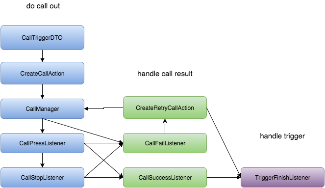
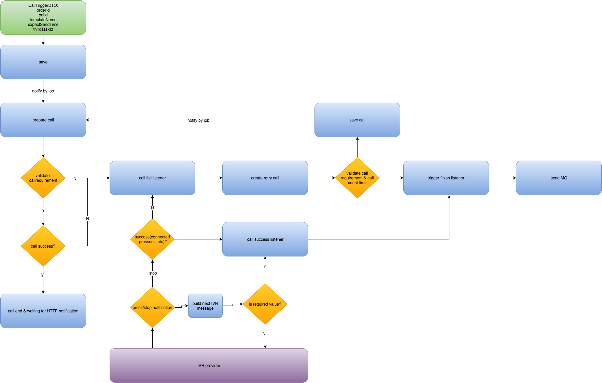
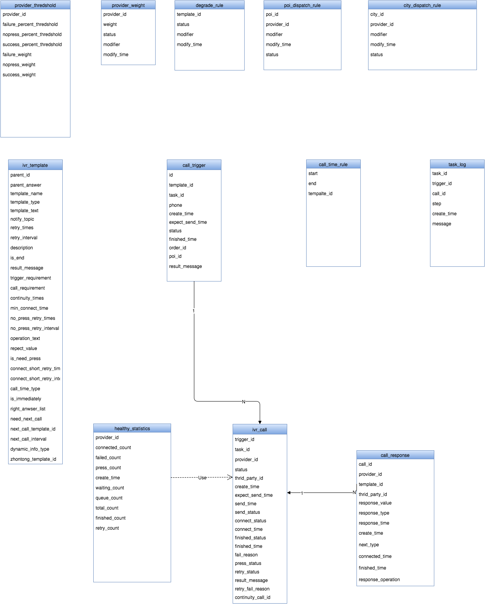
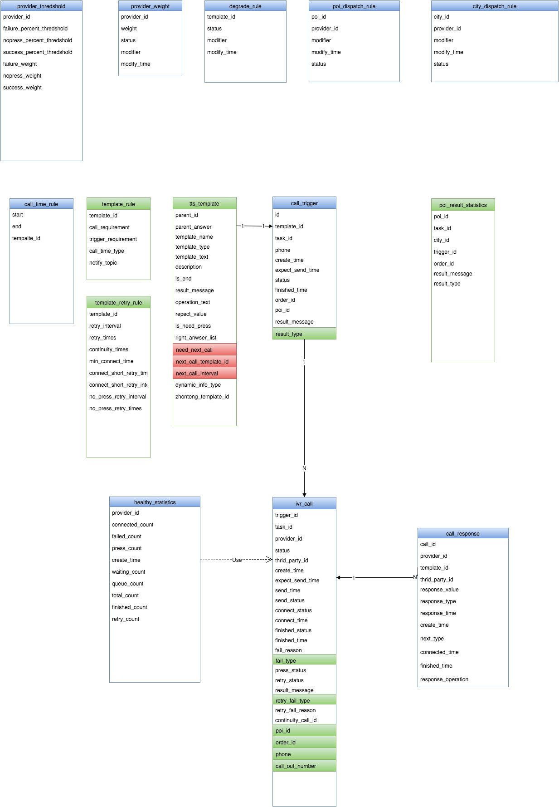

声讯平台V1.1改造梳理
一、1.0梳理
1.0链条结构:
1.0流程：
1.0ER图:
1.0遗留的问题
1.分布式执行任务单一一致性问题需优化
二、1.1改进设计
1.领域模型拆分
2.代码结构整理
编写完成时优化，主要针对RetryAction进行拆分重构
3.分布式执行任务单一一致性问题需优化
分片后根据ivr_call.id进行所得分片进行hash，原加锁逻辑不变防止一个call多次呼出。
4.接口性能优化，响应时间从300ms压缩到100ms以内
针对长链条中的数据多次查询进行优化、缓存。
费时较高的非必要操作异步化。
优化数据结构，添加部分冗余字段，减少db请求
5.风控报警设计
| 现象 | 规则 | 响应 |
|---|---|---|
| 无法触达 | 同一POI M天内超过N次未接听 | 告知订单此情况禁止部分下单 or 通过拒单隐藏逻辑 |
| 按键无反应 | 同一POI M天内超过N次接听超过S秒，但没有按键 | 切换外呼线路或切换服务商重新呼叫 |
| 多次拒单 | 同一POI M天内连续N次以上拒单 | 拒单隐藏逻辑 或 更重大惩罚措施（in order）? |
| 服务商故障 | 同一Provider M分钟内连续调用API异常N次以上 | 降低该服务商权重为1(1%)，待确认恢复后，手工修改权重 |
| 系统故障 | falcon监控 | 火线救援 |
6.提供部分运营可操作配置
设置商家电话线路
设置城市电话线路
配置TTS模板信息
配置服务商权重
7.设计业务指标及精细化打点
| 现象 | 规则 | 响应 |
|---|---|---|
| CALL_OUT | 执行呼叫 | transaction |
| CALL_LOCKED | 加锁准备开始呼叫 | event |
| CALL_CREATE_TTS | 生成模板动态信息 | event |
| CALL_EXECUTE | 第三方执行呼叫成功 | event |
| CALL_NO_RESPONSE | 呼叫未接听 | metric |
| CALL_NO_PRESS | 呼叫没有按键 | metric |
| CALL_RESPONSE_SUCCESS | 呼叫完成 | metric |
| CALL_ORDER_ACCEPT | 声讯接单 | metric |
| CALL_ORDER_REFUSE | 声讯拒单 | metric |
| CALL_RECHECK_SUCCESS | 声讯复核成功 | metric |
8.天润回调接口优化
select * from ivr_call where status = 10 limit 100;
上线以来，共15条被锁住没有释放的call，其中一条可能为执行外呼时重启（时间较早，日志不好排查），14条因为没有收到回调，没收到回调的原因有：天润故障、cc机器重启
处理方案为:
与天润沟融，务必添加重试机制
收到消息第一时间暂存，失败后重试
处理因意外情况未收到回调的call(监控长时间上锁的call)
修改重试策略为每5秒重试，重试10次